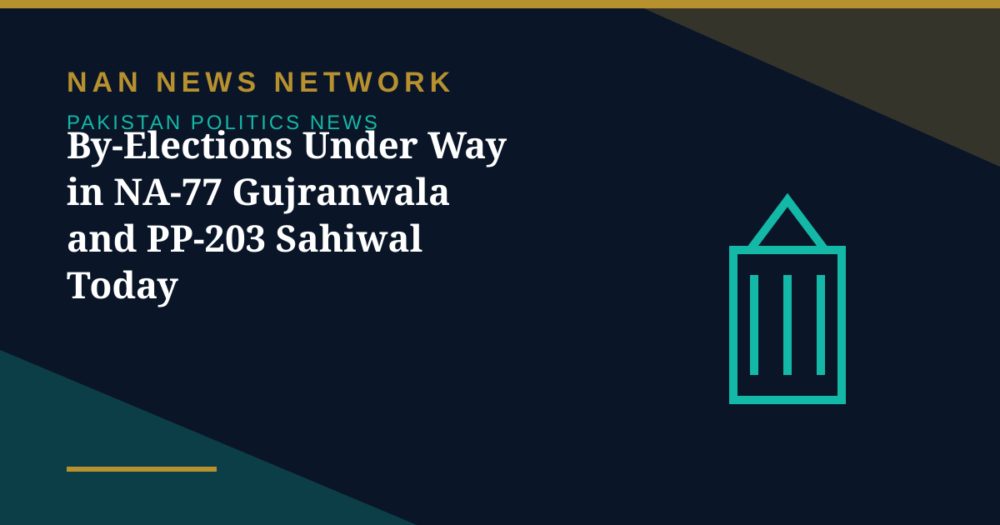

By-Elections Under Way in NA-77 Gujranwala and PP-203 Sahiwal Today

Polling is under way on Sunday in by-elections for two seats in Punjab — National Assembly constituency NA-77 (Gujranwala-I) and Punjab Assembly constituency PP-203 (Sahiwal-VI) — Dawn reported on November 8. Both seats fell vacant following the deaths of their respective PML-N lawmakers.
NA-77: a son contests his father's seat
NA-77 fell vacant after the death of five-time MNA Chaudhry Mehmood Bashir Virk on September 11 following a prolonged illness. The PML-N has fielded Rashid Bashir Virk, son of the late MNA, for the by-election, while the opposition parties, including the Pakistan Tehreek-i-Insaf (PTI), Pakistan Peoples Party (PPP) and Jamaat-i-Islami (JI), have not opted to contest the election, Dawn reported. The contest comes a day after the Election Commission of Pakistan took notice of an alleged violation of its code of conduct by Information Minister Attaullah Tarar, who visited the constituency by helicopter and addressed a campaign event for Rashid Bashir Virk. The commission summoned the minister to explain his position and added that the result of the constituency could be withheld until a final decision was made on the matter.
PP-203: 185 polling stations in Sahiwal
Around 1,370 polling personnel, including 574 women and 796 men, have been deputed at 185 polling stations for the by-election in PP-203 (Sahiwal-VI), in tehsil Chichawatni, Dawn reported. The upcoming by-election will be the second electoral contest in PP-203 since the 2024 general elections: Hanif Jutt won a by-election for the seat in November 2025 after the constituency's original winner, PTI-backed independent Rai Murtaza Iqbal, was disqualified following his conviction by an anti-terrorism court. PML-N candidate Muhammad Asad Hanif, nephew of the late Hanif Jutt, is among the contenders for the vacant seat. Results for both constituencies are expected after polling closes on Sunday evening.
Sources: Dawn, November 8, 2026
More on Pakistan Politics News
- Shehbaz Briefs Nawaz Sharif on K-P Security and Economic Challenges at Jati Umra
- ECP Takes Notice of Alleged Code Violation by Attaullah Tarar Ahead of NA-77 By-Poll
- Ishaq Dar Contacts Liaquat Baloch as Government-JI Final Talks Set for November 10
- ECP Sets February 7 for First Phase of Punjab Local Government Elections as KP Polls Stay Halted
- Khawaja Asif Sees Bid for 'Alternative Arrangement' in Punjab as Maryam Sends Salik Rs5 Billion Defamation Notice
- ECP Suspends All Preparations for Local Government Elections in Khyber Pakhtunkhwa
- Opposition Agrees to Hold All Parties Conference Within 10 Days After Fazl Meeting
- Pakistan Tests Indigenous Fa'az Air-to-Air Missile, Its First Locally Developed Weapon of Its Kind
- UN Committee Reviews Pakistan's Progress on Economic, Social and Cultural Rights Today
- Government Offers PTI Five Seats on Electoral Reforms Committee — and PTI Asks for the 2013 Formula
- ECP Issues Show-Cause Notice to MQM-P Over Missed Intra-Party Poll Deadline
- MQM-P Launches Street Movement for New Administrative Units, Announces November 29 Rally
- Pakistan Welcomes US Mediation Offer on Taliban Talks — With Conditions
- PTI Hits Back at Shehbaz Sharif Over KP Criticism, Demands End to Governor's Rule
- China's CPC Minister Liu Haixing Arrives in Islamabad on First Official Visit
- PPP Courts Opposition to Join 30-Member Electoral Reforms Committee
- National Assembly Unanimously Passes Workplace Harassment Resolution as Parliament Is Prorogued
- National Assembly Passes Four Government Amendment Bills by Majority Vote
- Opposition Signals Willingness to Join Electoral Reforms Committee After PPP Outreach
- National Assembly Session Suspended After Speaker Finds House Lacks Quorum
- Pakistan Proposes Parliamentary Friendship Group With Turkmenistan
- Lahore High Court Judge Mohsin Akhtar Kayani Resigns, Citing Executive Grip on Judiciary
- Pakistan Says Afghan Firing Kills One in South Waziristan Border District
- Pakistan Marks Kashmir Black Day With Rallies Across the Country
- National Assembly Passes Seven Private Members' Bills, Sends Six to Committees
- Pakistan Strongly Condemns Houthi Missile Attacks Near Makkah and Madinah
- Pakistan, Saudi Arabia and Turkiye Reported to Hold Tehran Talks on De-escalation
- Pakistan LPG Shortage Worsens as Iran Border Crossings Close
- Pakistan Ends Machine-Readable Passports and Switches Fully to E-Passports
- Pakistan Calls for a Fairer Global Order at the United Nations